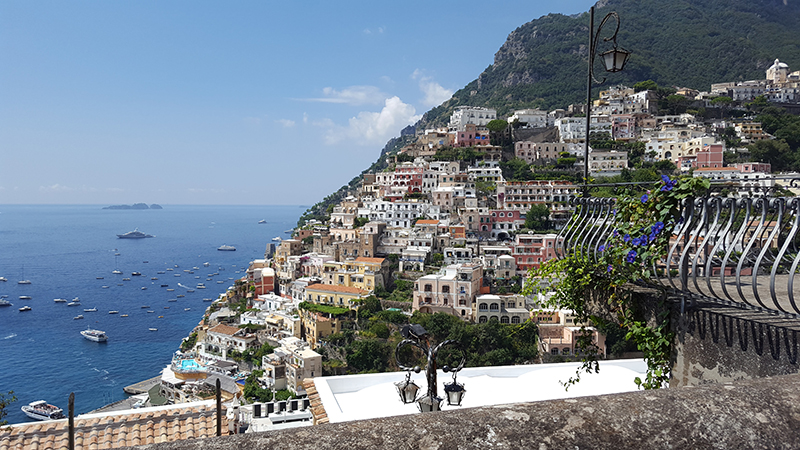

We struck Italy in the middle of a heatwave, yet still loved exploring the famous sights.
Venice, while crowded with tourists and a little smelly in places, is still an amazing place to visit.
You need to get yourself lost in all the narrow streets and canals, and enjoy the hospitality of those few locals still left living on the island.

Amalfi is another one of those famous places you will see in thousands of photos but still have your breath taken away when you experience it first-hand.
Another thing that can take your breath away is the insanely crowded, narrow and winding roads! Still, it is so beautiful that it is worth the driving stress.
Marvel at all the tourists taking the obligatory photo of themselves "holding up" the famous tower!
Interestingly, there was a failed terrorist plot to topple the tower the same day we were visiting.

What would any trip to Italy be without a visit to the Eternal City, Rome?

The Coliseum is one of the most iconic sights in the world, and you feel like you have travelled back in time when you stand inside the towering stadium.

The Forum was the heart of Rome. There isn't much still standing today, but there are still plenty of intact ruins to give you an idea of the scale of it.

The Pantheon is so big that when standing inside it is hard to get a grasp of its sheer size. The oculus lets in a dazzling beam of light.